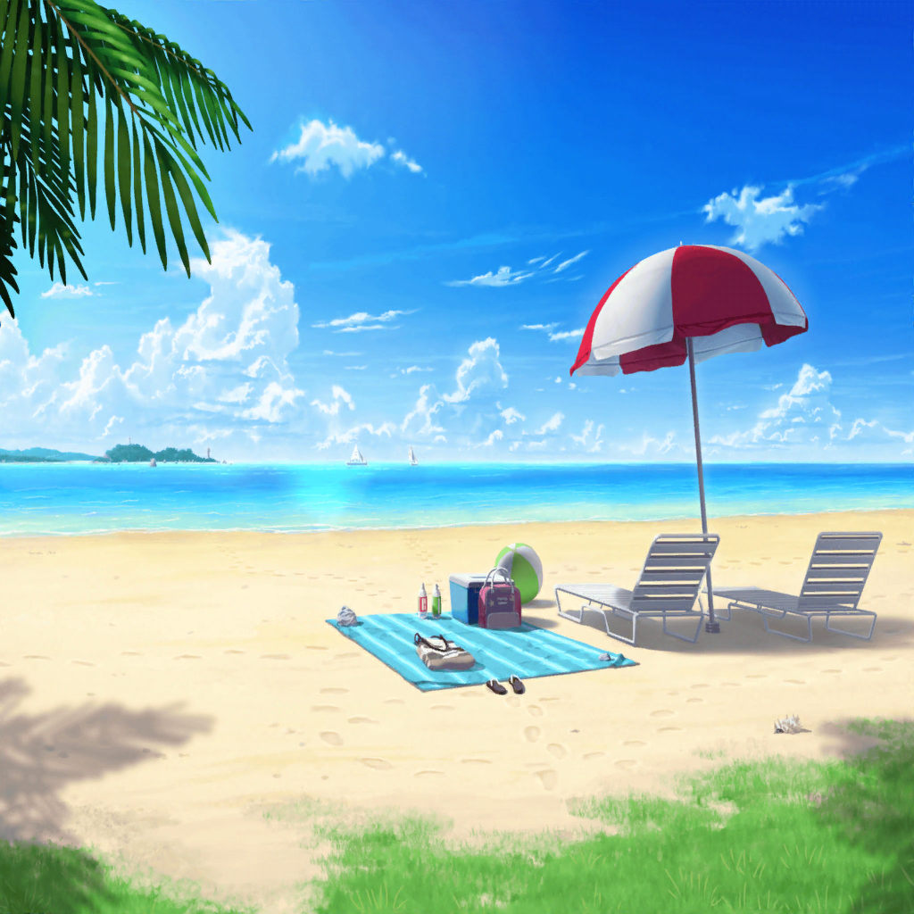

海
こころ
ほら、みんな見て！ とってもキレイなお魚さんが泳いでるわ！
きっとあたし達と一緒に遊びたいのね！
はぐみ
こころん、こっちにもいるよ！ あ、こっちにも！
すごーい、水族館みたいっ！
こころ
あ！ このお魚さん！ 今、笑顔になったわよ！
有咲
んなわけねーって！
たえ
有咲、この魚かわいいねー。
ずっと同じところでゆらゆらしてるよ。
この緑色の魚、何ていう名前だろ……？
有咲
緑色の魚……？
つーか、おたえ……
それって魚じゃなくて……海藻じゃね？
たえ
……え？
キミは……いつの間に？
有咲
つーか、最初っから海藻だったから！
はぐみ
よーし！ はぐみ、このお魚さんと競争しちゃおーっと！
えーい！
イヴ
ハグミさん、待ってください！
私も行きまーすっ！
イヴ
ここは、ヒナさんに教えてもらった、泳ぎ方の極意を！
イヴ
えっと確か……
足をトンとやって、腕をピッ、そしてスイスイ～でしたよね！？
トン、ピッ、スイスイ～！
こころ
イヴ！ すごいわ！
イヴって、とっても泳ぎが上手ね！
イヴ
これはヒナさんに教えてもらった、泳ぎ方の極意です！
ココロさんも、一緒に泳ぎましょう！
こころ
そうね！ それじゃあ、あそこまで行きましょう！
ほら向こうにサメさんがいるでしょ？
有咲
は！？ サメっ！？
今サメって言ったか！？
イヴ
あ……あそこに背びれみたいなものが見えます……
有咲
背びれって……うわ！ マジだっ！
たえ
だんだん、こっちに近づいてきてるね
こころ
サメさんもあたし達と一緒に遊びたいのかもしれないわ！
サメさんのところまで競争よ！
有咲
えっ、ちょ……っ！
弦巻さん！ ホントにやばいから！ 戻って来いって！
こころ
平気よー！
みんな早くいらっしゃいっ！
サメさん、こんにちはっ！ って……あら？
たえ
……あれって
はぐみ
木の板……？
イヴ
よ、良かったです、ココロさん……
有咲
ま、まあ、冷静に考えたらこんなところに
サメがいるわけねーよな……あーびっくりした
有咲
つーか、心臓にわりーって……
１回上がって、休憩にしようぜ……っ
はぐみ
え？ あーちゃん、１回上がるの？
それじゃあさ、みんなでビーチバレーしようよっ！
こころ
ビーチバレー！ いいわねっ！ やりましょう！
有咲
休憩って、言ったのに……
全然、聞いてねーし……
浜辺
はぐみ
それじゃあ、あーちゃん！
審判はお願いねー！
有咲
はいよー
有咲
（ふぅ……どうにか審判をやれることになったけど……
弦巻さん北沢さんチーム対おたえイヴチームか……
これ、戦う前から勝負決まってるだろ……）
はぐみ
必殺、はぐみサーブ！
いっくよー！ ……そーれっ！
たえ
よーし……はい、キャッチ！
有咲
取るなーっ！
たえ
え？ ダメなの？
有咲
おまえなー！ 基本ルールはバレーボールと一緒だぞ！
弦巻さん北沢さんチーム、１ポイント！
はぐみ
わーいっ！ はぐみのサービスエースだよーっ！
こころ
はぐみ、すごいわ！ その調子よ！
イヴ
タエさん！ 試合はまだまだこれからです！
頑張っていきましょう！ ブシドーの精神です！
１０分後
こころ
今度はあたしのサーブね！ いくわよ——そーれっ！
たえ
イヴ、そっち行ったよ！
イヴ
はいっ！ ブシドー！
有咲
おお、拾った……！
イヴ
タエさんっ！ ヒッサツワザいきましょうっ！
たえ
うん！
有咲
必殺技！？ さっきこそこそなにか話してたけど、
すげー技でも考えてたのか……！？
イヴ・たえ
ブシの花園アターック！！！
有咲
ブシの花園アタック！？
……って、ただのフェイントじゃねーかっ！
こころ
それーっ！
有咲
ちょ、あっさり拾われてるし！
はぐみ
こころん、ナイスレシーブっ！
いっくよーっ！ はぐみアターック！
たえ
わっ、速い……っ！
こうなったら……キャッチ！
有咲
はぁ……はい、ゲームセット。
弦巻さん北沢さんチームの勝利！